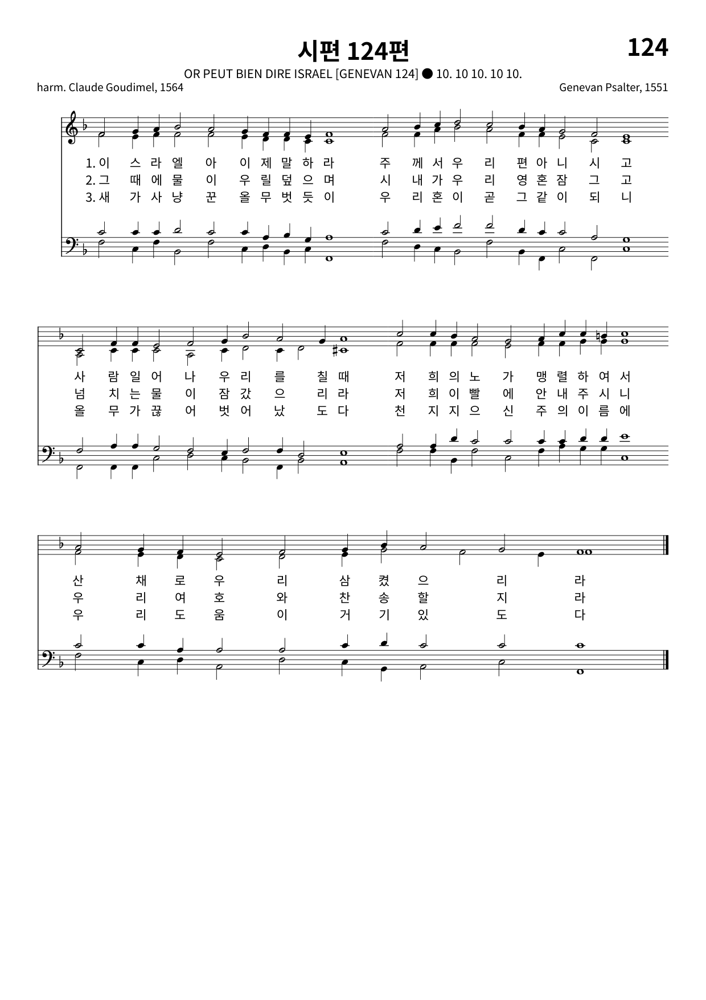

Psalm 124
OR PEUT BIEN DIRE ISRAEL [GENEVAN 124] · 10. 10 10. 10 10.
English title: Let Israel Now Say in Thankfulness
Tune: Genevan Psalter, 1551 · Harmony: Claude Goudimel, 1564 · Lyrics: Korean adaptation of Psalm 124 from the Korean Revised Version (AI draft adaptation · not yet theologically reviewed) · 3 stanzas
Score PDF MusicXML (for printing) MusicXML (for accompaniment, with prelude and repeats) Read Psalm 124 (Korean Revised Version)
Score
← Psalm 123 ListAccompaniment (in preparation)Psalm 125 →
Lyrics (Korean)
Stanza 1
이스라엘아 이제 말하라
주께서 우리 편 아니시고
사람 일어나 우리를 칠 때
저희의 노가 맹렬하여서
산 채로 우리 삼켰으리라
이스라엘아 이제 말하라
주께서 우리 편 아니시고
사람 일어나 우리를 칠 때
저희의 노가 맹렬하여서
산 채로 우리 삼켰으리라
Stanza 2
그 때에 물이 우릴 덮으며
시내가 우리 영혼 잠그고
넘치는 물이 잠갔으리라
저희 이빨에 안 내주시니
우리 여호와 찬송할지라
그 때에 물이 우릴 덮으며
시내가 우리 영혼 잠그고
넘치는 물이 잠갔으리라
저희 이빨에 안 내주시니
우리 여호와 찬송할지라
Stanza 3
새가 사냥꾼 올무 벗듯이
우리 혼이 곧 그같이 되니
올무가 끊어 벗어났도다
천지 지으신 주의 이름에
우리 도움이 거기 있도다
새가 사냥꾼 올무 벗듯이
우리 혼이 곧 그같이 되니
올무가 끊어 벗어났도다
천지 지으신 주의 이름에
우리 도움이 거기 있도다